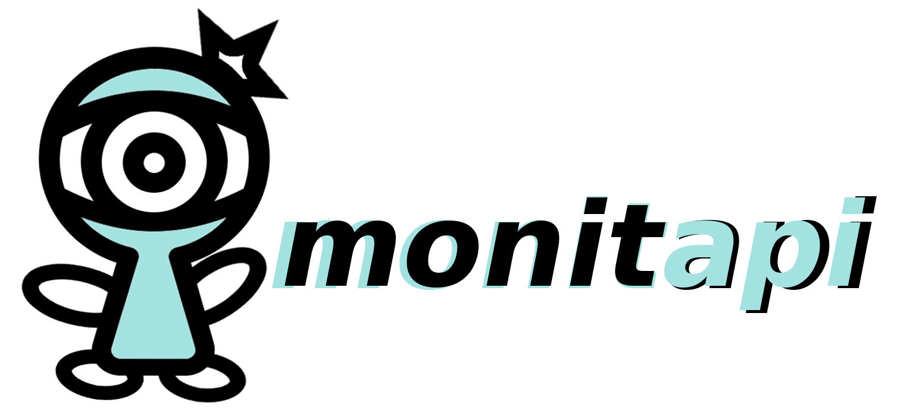

monitapi is something to monitor API(URL) by a serverless.

Easy to monitoring
The monitoring targets can be defined using YAML. You can define the monitoring targets in a simple format.

Easy to deploy functions
You can easily deploy serverless with a single command. Supported serverless will be added as appropriate.

Notify to various services
The notification targets can be defined using YAML. Notification targets will be added as appropriate.